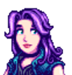

Bolo Rosa

60min
 Fácil
Fácil
 Favorito de:
Favorito de:

Abigail
Haley
 Disponível em:
Disponível em:
Rainha do Molho
21 Verão, Ano 2
Ingredientes
- 2 ovos
- 1 xícara de açúcar
- 1 xícara de farinha
- 1/2 xícara de leite
- 1/2 xícara de purê de morango
- 1 colher de fermento
- Corante rosa (opcional)

Modo de Preparo
- Misture os ovos com o açúcar.
- Adicione os ingredientes secos e o leite.
- Incorpore o purê de morango.
- Asse a 180 °C por 35 minutos.
- Cubra com chantilly rosa (opcional).